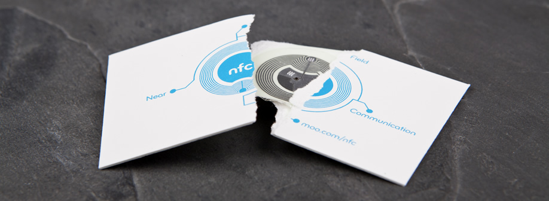
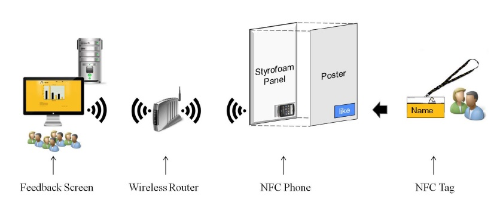
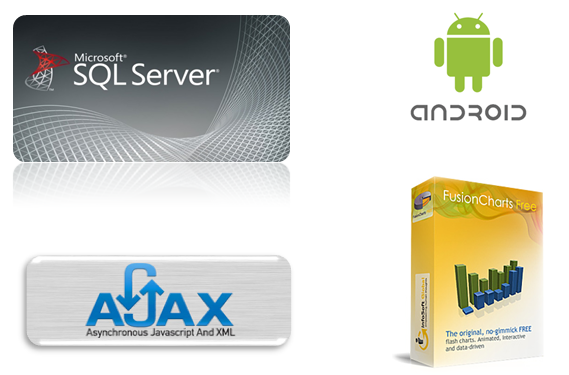
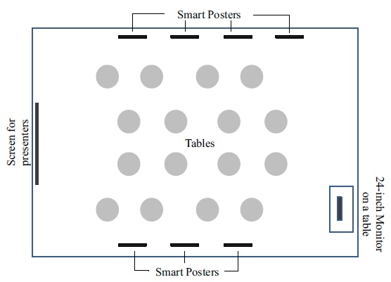
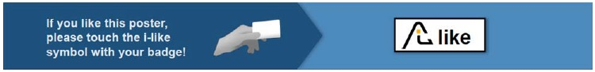
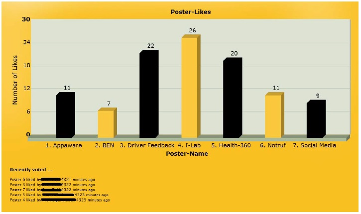
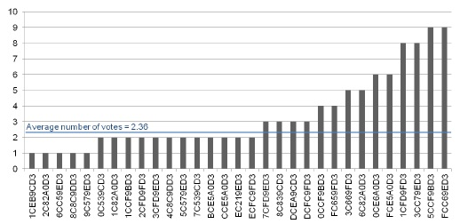

Switching the role of NFC tag and reader for the implementation of Smart Posters
2012 4th International Workshop with Focus on Near Field Communication
Abstract
ประโยชน์และโอกาสของเทคโนโลยี NFC (Near Field Communication) มีการกล่าวถึงเป็นเวลาหลายปีมาแล้ว สัญญาอย่างต่อเนื่องของผู้ผลิตโทรศัพท์มือถือที่จะฝังเทคโนโลยีในชุดของอุปกรณ์ในเร็วๆนี้ ตรงข้ามกัน ที่วิจัยและการปฏิบัติได้ระบุไว้ จำนวนการใช้งานที่ให้ความสนใจมากในหมู่ ผู้ใช้ ในการใช้งานApplicationเหล่านี้เป็นSmart Poster อย่างไรก็ตาม แลกเปลี่ยนส่วนแบ่งการตลาดที่ต่ำของการติดตั้งNFCและ Smartphone มีท่าทีว่าจะเป็นอุปสรรคต่อการดำเนินงานของหลายๆการทำงานของSmart Poster ดังนั้น สำหรับบางสถานการณ์ โครงงานนี้ได้เสนอที่จะเปลี่ยนบทบาทระหว่างTagคงที่และ โทรศัพท์มือถือโดยการติดโทรศัพท์มือถือกับโปสเตอร์และให้ Tag กับผู้ใช้แทน โครงงานอธิบายวิธีการและแสดงให้เห็นถึงความเป็นไปได้ ด้วยการรายงานบทเรียนที่ได้จากกรณีศึกษา
Introduction
ในปี 2004 Near Field communication (NFC) ที่ได้รับ ประกาศเป็นมาตรฐานสำหรับการแลกเปลี่ยนข้อมูลและการเชื่อมต่อแบบไร้สาย การเชื่อม ต่ออยู่ในช่วงเซนติเมตร ตั้งแต่นั้นมา ผู้ผลิตอุปกรณ์ที่ได้รับการประกาศ ให้สามารถฝัง NFC ในอุปกรณ์ของพวกเขาต่อไป เท่าที่เรารู้วันนี้ มีผู้ผลิตเพียงไม่กี่รายที่ทำจริง ตัดกัน กับที่ปล่อย Google Nexus S ในต้น ปี 2011 ได้สร้างความหวังของ NFC อีกครั้ง มันเป็น Smartphone แบบแรกที่มีการทำงานนี้ ในการใช้งานที่กล่าวถึงมากที่สุดสำหรับเทคโนโลยี NFC ที่ได้รับแนวคิดมาจากSmart Poster สติกเกอร์ที่ติดอยู่กับวัตถุที่ให้ผู้ใช้สามารถเข้าถึง บริการดิจิตอลเมื่อสัมผัส Tag กับโทรศัพท์ของพวกเขา Smart Posterเป็นโปสเตอร์แบบปกติ, ป้ายโฆษณา, นิตยสาร แต่ยังมีแถบสามมิติ จุดที่สัมผัสที่อยู่บนโปสเตอร์แสดงให้เห็นส่วนที่ผู้ใช้สามารถนำ Smartphone ของพวกเขาในการไปจ่อกับ Tagเพื่ออ่าน ตัวอย่างที่ใช้ Smart Poster เช่น ข่าวสารการท่องเที่ยว,คูปอง,พิพิธภัณฑ์,ใบสั่งอาหารของผู้สูงอายุ,กิจกรรมทางการศึกษา,งานแสดงสินค้า
อย่างไรก็ตาม ส่วนแบ่งการตลาดในปัจจุบันที่ NFC-equipped smartphones ยังคงต่ำกว่า 0.01% 2 ส่วนใหญ่ของผู้เข้าชมเหตุการณ์เช่นงานแสดงสินค้า, นิทรรศการหรือโชว์รูม ไม่สามารถใช้งานโทรศัพท์มือถือร่วมกับ Smart Poster ได้เพราะโทรศัพท์มือถือพวกเขาไม่มี NFC บนเครื่องพวกเขา ณ วันนี้มีทางเลือกที่จำกัดมากของอุปกรณ์สนับสนุนหรือรองรับการใช้งาน NFC แม้ Apple ที่เปิดตัว iPhone 4S เมื่อเร็วๆนี้ก็ไม่สนับสนุน NFC ผลลัพธ์ที่ออกมา มีจำนวนการใช้งานNFC Poster จำนวนน้อย ด้วยเหตุนี้ทำให้ เทคโนโลยี NFC ที่ใช้เพื่ออำนวยความสะดวกและมีประสิทธิภาพ การติดตั้งSmart Poster ในหลายๆสถานที่จึงไร้ประโยชน์
ในเอกสารฉบับนี้ได้นำเสนอแนวคิดใหม่สำหรับการดำเนินการ Smart Poster ว่าในขณะที่ใช้เทคโนโลยี NFC หลีกเลี่ยงปัญหาในเรื่องการได้ส่วนแบ่งทางการตลาดของ NFC-equipped Smartphone ในราคาต่ำ แนวคิดนี้เป็นประโยชน์อย่างยิ่งในสถานการณ์ที่มีจำนวนผู้ใช้บริการที่สูงเมื่อเทียบกับจำนวนของ Smart Poster เราจะจัดการกับปัญหาของจำนวนผู้ใช้บริการที่มีจำนวนน้อยโดยการเปลี่ยนบทบาทของ NFC smartphone ให้กลายเป็นเครื่องช่วยอ่านแก่ผู้ใช้บริการและ NFC tags สามารถนำไปใช้ได้กับโปสเตอร์ ในกระบวนการของเราผู้ใช้บริการมีการติดตั้งป้ายชื่อโดยเพิ่ม NFC tags เข้าไป
Concept
เป้าหมายคือเพื่อให้ผู้เข้าชมเพื่อแสดงการตอบรับเชิงบวกเฉพาะโปสเตอร์ที่พวกเขากำลังมองหา ในแนวความคิดของเราที่เรานำปุ่ม “Like”ใน Facebook มาใช้ และเปลี่ยนมาใช้งานในชีวิตจริงโดยให้ใช้งานสัมผัสกับเทคโนโลยี NFC ผู้เข้าชมจะได้รับข้อความตอบกลับในทันทีเพื่อแสดงให้เห็นว่าการลงคะแนนของพวกเขาสำเร็จและผลรวมควรจะปรากฏขึ้นเพื่อแสดงการประเมินผลในปัจจุบันของโปสเตอร์
แทนที่จะเป็นการวาง Tags บนโปสเตอร์และใช้ Smartphone ทำหน้าที่อ่านสำหรับผู้เข้าชม เราขอแนะนำให้เปลี่ยนบทบาทของ Tag และ Reader : วางโทรศัพท์เคลื่อนที่เป็น Tag ลงในโปสเตอร์ ในขณะที่ผู้เข้าชมใช้ NFC Tag ในการลงคะแนน ในการตั้งค่านี้ผู้จะถือป้ายที่ระบุตัวตนโดยใช้ NFC tag เพื่อใช้ลงคะแนนให้โปสเตอร์ โดยการลากป้ายของพวกเขาผ่านจุดที่ระบุไว้ในโปสเตอร์ ที่ด้านหลังจุดสัมผัสนี้มี Smartphone ทำหน้าเป็นตัวรับและแสดงข้อความตอบกลับให้กับผู้ใช้ทันที ตัวอย่าง เช่นโดยการเล่นเสียงเพื่อนยืนยันการว่าลงคะแนนนั้นสำเร็จ Wireless Router ที่เชื่อมต่อกับ Smartphoneไปยัง backend และการแสดงผลรวมบนจอแสดงผลภายนอก
ดังนั้นผู้เข้าชมสามารถใช้ป้ายของพวกเขาเพื่อแสดงความชื่นชอบสำหรับโปสเตอร์แต่ละอันได้ และจะมีข้อความแสดงเป็นเสียงดังขึ้นเพื่อแจ้งให้ทราบว่าการลงคะแนนนั้นสำเร็จ และผลการลงคะแนนเสียงในปัจจุบันจะแสดงทันทีบนหน้าจอ
Implementation
การดำเนินงานของระบบประกอบด้วย MySQL backend , Ajax driven website และ Android application การพัฒนาเว็บไซต์ที่ใช้ซอฟต์แวร์ FusionCharts Free เพื่อแสดงแถบแผนภูมิ และต้นแบบ JavaScript Framework ที่จะดึงข้อมูลออกจากฐานข้อมูล ลงในแผนภูมิที่มีการปรับปรุงทุกระยะเวลา 5 วินาที และนั่นจะดึงข้อมูลล่าสุดจาก backend PHP script และใส่ไปในแผนภูมิ
The Android application (v2.3.1) การเชื่อมต่อโปสเตอร์กับ backend ได้รับการพัฒนาและติดตั้งบน Smartphoneของ Google Nexus S เมนูการตั้งค่าให้ตั้งค่าหมายเลขของโปสเตอร์ที่สอดคล้องกันใน application บทบาทของ application คือการอ่านอัตโนมัติด้วยสามารถระบุรหัสเฉพาะในแต่ละ Tags หากนำป้ายไปแตะที่ปุ่ม Like บนโปสเตอร์ สแกนแล้วส่งข้อมูลรหัสเฉพาะโดย application ไปยัง PHP script ที่เชื่อมโยงกับ SQL database SQL database ประกอบด้วยตารางสามตาราง ตารางแรกระบุรหัสเฉพาะของแต่ละป้าย ในป้ายจะมีชื่อจริงของผู้เข้าร่วมงานอยู่ ตารางที่สองมีจำนวนรวมของคะแนนที่โหวตให้โปสเตอร์ ตารางที่สามเก็บรหัสของผู้โหวตที่สัมพันธ์กับรหัสบนโปสเตอร์ และช่วงเวลา บทบาทของ PHP script ก็เพื่อเพิ่มคะแนนเสียงให้แต่ละโปสเตอร์ในตาราง SQL และแสดงผลโหวต ตลอดจนผลโหวตล่าสุด 5 คน บนจอแสดงผล
Case Study
เราทดสอบระบบ Smart Poster นำมาใช้ในบริบทของเหตุการณ์ในเดือนกันยายน 2011, ที่เรานำเสนองานวิจัยอย่างต่อเนื่องในโปสเตอร์ 7 อันสำหรับกลุ่มของผู้เข้าชม 45 ท่านจาก บริษัท Swiss
รูปแบบโดยรวมของเหตุการณ์การเผยแพร่ การติดตั้ง Smart Poster ประกอบด้วยจอ 24 นิ้ว Smart Poster 7 แผ่นแต่ละแผ่นติดบนแผงโฟมที่มีขนาดเดียวกับโปสเตอร์ โทรศัพท์ Google Nexus S 7เครื่องโทรศัพท์มือถือที่ใช้เป็น NFC tag สำหรับแต่ละโปสเตอร์ 45 NFC tags ยืดติดกับแต่ละบัตร และ Wireless Router ที่จะสร้างเครือข่ายไร้สาย ตัดแผงโฟมแต่ละชิ้นให้เป็นช่องที่ใช้สำหรับใส่โทรศัพท์ NFC เข้าไปได้ตรงหลังบริเวณปุ่ม Like ช่องใส่โทรศัพท์ ที่ตัดเป็นช่อง ใช้การยึดติดแบบง่ายๆโดยใช้ สก็อตเทปและแถบตีนตุ๊กแก
การติดตั้งของโครงงานได้รับการอธิบายสั้น ๆ กับผู้เข้าชมในจุดเริ่มต้นของเหตุการณ์ที่เกิดขึ้น แต่ยังมีวิธีการใช้อธิบายโดยตรงบนโปสเตอร์
ในการตั้งค่าเริ่มต้นนี้ผู้เข้าชมสัมผัสปุ่ม Like ด้วยป้ายของพวกเขา จะได้ยินรับเสียงตอบรับในรูปแบบของเสียง "Jippie" จากนั้นขนาดจอ 24 นิ้วจะแสดงคะแนนรวมในรูปแบบของแผนภูมิ และจำนวนของผู้มีสิทธิลงคะแนน ผู้เข้าชมสามารถลงคะแนนได้บ่อยเท่าที่พวกเขาต้องการ
Result
นอกเหนือจากการพัฒนาระบบและค่าใช้จ่ายวัสดุสำหรับการติดตั้งหรือโฟม ป้ายชื่อ ค่าใช้จ่ายที่สำคัญนั้นเป็นค่าใช้จ่ายสำหรับโทรศัพท์ Nexus-S 7 เครื่อง(เครื่องละ €300) และ 45 NFC tags (ชิ้นละ €1 ) ซึ่งคิดเป็นสัดส่วนประมาณ 16% ของค่าใช้จ่ายในโครงงาน ที่จะต้องใช้โทรศัพท์ 45 เครื่องเพื่อให้ผู้เข้าชมยืม
 
การทดลองใช้เวลาประมาณหกชั่วโมงรวมรวมทั้งการพูดคุยอธิบายจากลำโพงและการฝึกอบรม ในระหว่างการหยุดพักการพูดคุย ผู้เข้าชมมีโอกาสที่จะเข้าไปดูโปสเตอร์นำเสนอใกล้ๆ และโหวตลงคะแนนถ้าพวกเขาชอบ จากจำนวนผู้เข้าชมทั้งหมด 45คนที่มีโอกาสสำหรับการลงคะแนน ผู้เข้าชมจำนวน 31 คน ได้ทำการลงคะแนน เป็นจำนวน 106 คะแนน
ดังนั้นการลงคะแนนของผู้ชมเป็นความสมัครใจ 69% ค่าเฉลี่ยของจำนวนลงคะแนน คิดเป็น 2.36 ของค่าการกระจายของการโหวตล่าสุดสำหรับโปสเตอร์แต่ละใบ แสดงในรูปภาพที่ 5 และค่าการกระจายคะแนนของแต่ละผู้เข้าชม ในรูปภาพที่ 6 มีจำนวนสูงสุดของคะแนนที่ได้รับจากผู้ลงคะแนนคนเดียวคือ 9 คะแนน
Discussion
เรารวบรวมข้อมูลเชิงลึกจากการสังเกตเหตุการณ์และการอภิปรายกับผู้เข้าชมของเรา แต่ข้อมูลเชิงลึกที่ได้รับจากการวางแผนแนวคิดและขั้นตอนการดำเนินงาน ในเรื่อง Smart Poster มีการค้นพบสามประเภทหลักที่เกี่ยวข้องกัน : (1) user interface (2) user feedback และ (3) การประเมินโดยรวมของเหตุการณ์ Smart Poster
ในผู้เข้าชมทั่วไปทำการโหวตโดยไม่ต้องใช้ตัวสนับสนุนที่เป็นคำแนะนำเพิ่ม ในข้อยกเว้นที่หายาก ผู้ใช้ลากป้ายนอกเหนือบริเวณปุ่ม Like ขณะที่ NFC ได้รับความนิยมมากขึ้นโดยใช้ "N-Mark" ได้รับการส่งเสริมจาก NFC Forum เป็นสัญลักษณ์ทั่วโลกเพื่อแสดงให้เห็นว่าการทำงานของ NFC สามารถใช้ได้อาจจะเป็นวิธีการแก้ปัญหาในอนาคต อย่างไรก็ตามจนถึงขณะนี้สัญลักษณ์นี้ส่วนใหญ่จะไม่เป็นที่รู้จักในหมู่คน
ผู้เข้าชมยังกล่าวถึงเสียงที่ดังขึ้นเมื่อทำการโหวต ว่าเป็นประโยชน์สำหรับการยืนยันการลงคะแนนในโปสเตอร์สำเร็จ แต่บางคนบ่นควรจะให้เสียงตอบรับดังกว่านี้เพราะว่าเสียงจากภายในงานจากผู้คนดังมากทำให้ยากที่จะได้ยินเสียง สำหรับผู้เข้าร่วมที่ได้ยิน "Jippie " เป็นที่ชัดเจนว่าการลงคะแนนเป็นที่เรียบร้อยแล้ว สำหรับผู้เข้าร่วมที่ไม่ได้ยินเสียงตอบรับ ก็จะเกิดความสับสนคิดว่าลงคะแนนเป็นที่เรียบร้อยแล้ว ดังนั้นผู้เข้าร่วมบางดึงป้ายออกไปจากโปสเตอร์เพราะคิดว่าการลงคะแนนเสร็จแม้ว่ามันจะไม่ใช่ ในขณะที่บางส่วนของผู้เข้าร่วมการลงคะแนนพยายามใหม่ แต่การลงคะแนนที่ทำประสบความสำเร็จ สำหรับเหตุผลที่ เสียงตอบกลับให้กับผู้เข้าร่วมหลังจากการสแกนควรมีความชัดเจนและใช้งานง่ายเพื่อที่จะหลีกเลี่ยงความสับสน
นอกจากนี้ โดยเฉพาะเมื่อจำนวนของผู้เข้าชมอยู่ในระดับสูงเมื่อเทียบกับจำนวนของ Smart Poster วิธีการของเรายังคงเป็นการลงทุนที่มีประสิทธิภาพ จำนวนของ Smartphone ยังคงเท่าเดิมและค่าใช้จ่ายของ Tags ก็ไม่ได้เป็นที่สนใจ แม้ว่าผู้เข้าชมที่เข้ามาใช้งาน Smart Poster อาจจะมีจำนวนมากกว่าที่กำหนดใน ในการใช้งานนี้มีข้อดีหลายประการเกี่ยวกับทางด้านเศรษฐกิจ แต่ยังคำนึงถึงการลดอุปสรรคทางจิตวิทยาและเทคโนโลยีสำหรับการมีส่วนร่วมของผู้เข้าชม
เรายังพบว่าสำหรับการจัดกิจกรรม ระยะเวลาการใช้งานของแบตเตอรี่นั้นไม่เป็นปัญหา เราทดสอบโดยปิดฟังก์ชั่นการทำงานทั้งหมดที่ใช้พลังงานโทรศัพท์ (GPS, Display, Bluetooth ) เราทำการสแกนโปสเตอร์หลายร้อยครั้งในความถี่ที่แตกต่างกัน หลังจากหกชั่วโมง แบตเตอรี่ก็ยังคงสูงกว่า 50% ซึ่งน่าจะพอสำหรับโครงงาน อย่างไรก็ตาม โทรศัพท์ควรได้รับการชาร์จแบตเตอรรี่อย่างเต็มที่ก่อนที่จะเริ่มงานและฟังก์ชั่นการทำงานทั้งหมดที่ไม่จำเป็นควรปิดให้หมด ในท้ายที่สุดแล้วการใช้โทรศัพท์เป็น Tags ต้องการพลังงานน้อยกว่าการใช้โทรศัพท์ในการอ่านที่ใช้พลังงานมากกว่า
เรายังพบว่าสำหรับการจัดกิจกรรม ระยะเวลาการใช้งานของแบตเตอรี่นั้นไม่เป็นปัญหา เราทดสอบโดยปิดฟังก์ชั่นการทำงานทั้งหมดที่ใช้พลังงานโทรศัพท์ (GPS, Display, Bluetooth ) เราทำการสแกนโปสเตอร์หลายร้อยครั้งในความถี่ที่แตกต่างกัน หลังจากหกชั่วโมง แบตเตอรี่ก็ยังคงสูงกว่า 50% ซึ่งน่าจะพอสำหรับโครงงาน อย่างไรก็ตาม โทรศัพท์ควรได้รับการชาร์จแบตเตอรรี่อย่างเต็มที่ก่อนที่จะเริ่มงานและฟังก์ชั่นการทำงานทั้งหมดที่ไม่จำเป็นควรปิดให้หมด ในท้ายที่สุดแล้วการใช้โทรศัพท์เป็น Tags ต้องการพลังงานน้อยกว่าการใช้โทรศัพท์ในการอ่านที่ใช้พลังงานมากกว่า
Conclusion
ในบทความนี้เรานำเสนอแนวคิดสำหรับ NFC-supported Smart Poster scenarios ที่มีลักษณะเฉพาะ เช่น ในโชว์รูม ในงานแสดงสินค้าหรือนิทรรศการ ในสถานการณ์เหล่านี้ จำนวนของผู้เข้าชมมักจะสูงเมื่อเทียบกับจำนวนของโปสเตอร์ที่มีอยู่ เราอยู่ในส่วนแบ่งการตลาดที่ต่ำของ NFC-supported smartphones โดย ติด Tags กับโทรศัพท์เพื่อนหลีกเลี่ยงความซับซ้อนในการให้เช่าโทรศัพท์ วิธีการนี้จะช่วยให้การใช้ Smart Poster มีประมาณผู้เข้าชมมากขึ้นและค่าใช้จ่ายของ Tag ประเมินได้ ผลลัพธ์ของเราเพิ่มเติมให้การสนับสนุนสำหรับความสำคัญของ Feedback ทันทีเมื่อการสแกน NFC tag ตามที่ระบุไว้ ส่วนใหญ่ของ Smart Poster scenarios เช่นการโหวตลงคะแนน อธิบายไว้ในบทความนี้ ในขณะที่มันยังไม่เป็นที่นิยม เมื่อเทคโนโลยี NFC จะเข้าถึงประชาชนและเป็นที่ยอมรับ วันนี้การจัดกิจกรรมควรพิจารณาการสลับบทบาทของ Tagและ Reader นำเสนอวิธีการแสดงให้เห็นถึงประโยชน์ของเทคโนโลยี NFC ที่สามารถใช้ประโยชน์ได้ภายใต้สถานการณ์วันนี้